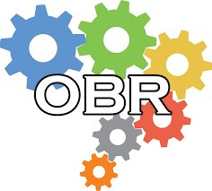
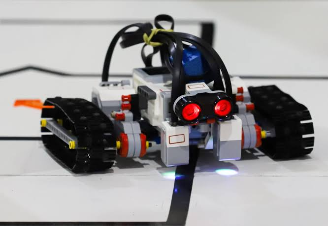

A Olimpíada Brasileira de Robótica (OBR) é uma competição nacional que visa estimular o interesse dos estudantes pela ciência, tecnologia, engenharia e matemática (STEM), promovendo a aprendizagem prática e o desenvolvimento de habilidades em robótica.
Categorias da OBR

A OBR possui diferentes categorias de competição, incluindo:
Categoria A: Robótica Educacional
Categoria B: Robótica Competitiva
Categoria C: Robótica de Aplicação
Objetivos da OBR
Os principais objetivos da OBR incluem:
Promover o interesse dos estudantes em ciência e tecnologia.
Estimular a criatividade e a inovação na resolução de problemas.
Desenvolver habilidades de trabalho em equipe e comunicação.
Preparar os estudantes para carreiras em áreas relacionadas à robótica e engenharia.
Exemplos de Projetos
Os projetos apresentados na OBR podem variar desde robôs simples que realizam tarefas básicas até sistemas complexos que envolvem inteligência artificial e automação. Alguns exemplos incluem:

Exemplo de Robô
Robôs que seguem linhas ou evitam obstáculos.
Robôs que realizam tarefas específicas, como pegar e transportar objetos.
Robôs autônomos que utilizam sensores para interagir com o ambiente.